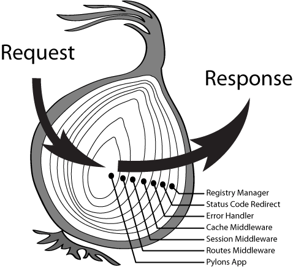

我们已经了解了生成器函数以及 yield 的用法，但它们具体有什么用处呢？它们可以解决 js 中诟病已久的回调金字塔问题。co 是个典型的库，我们通过分析 co 库的核心代码来了解是如何通过生成器函数以及 yield 解决回调嵌套的。举个例子，假如我们需要顺序读取 a.js 、b.js 和 c.js 并打印文件内容，通常会写出如下代码：
var fs = require('fs');
function readFile(path, cb) {
fs.readFile(path, {encoding: 'utf8'}, cb);
}
readFile('a.js', function (err, dataA) {
console.log(dataA);
readFile('b.js', function (err, dataB) {
console.log(dataB);
readFile('c.js', function (err, dataC) {
console.log(dataC);
...
});
});
});
如果需要读取的文件很多，那么写出的代码就像倒立的金字塔了。使用 co 模块后，代码如下：
var fs = require('fs');
var co = require('co');
function readFile(path) {
return function (cb) {
fs.readFile(path, {encoding: 'utf8'}, cb);
};
}
co(function* () {
var dataA = yield readFile('a.js');
console.log(dataA);
var dataB = yield readFile('b.js');
console.log(dataB);
var dataC = yield readFile('c.js');
console.log(dataC);
}).catch(function (err) {
console.log(err);
});
我们对 readFile 函数进行了改造，使它返回一个 thunk 函数（即有且只有一个参数是 callback 的函数，且 callback 的第一个参数为 error），这样我们就可以用同步的方式书写异步的代码了。我们以 co@4 版本的核心代码来讲解它是如何将回调金字塔扁平化的，co@4 核心代码如下：
function co(gen) {
var ctx = this;
return new Promise(function(resolve, reject) {
if (typeof gen === 'function') gen = gen.call(ctx);
if (!gen || typeof gen.next !== 'function') return resolve(gen);
onFulfilled();
function onFulfilled(res) {
var ret;
try {
ret = gen.next(res);
} catch (e) {
return reject(e);
}
next(ret);
}
function onRejected(err) {
var ret;
try {
ret = gen.throw(err);
} catch (e) {
return reject(e);
}
next(ret);
}
function next(ret) {
if (ret.done) return resolve(ret.value);
var value = toPromise.call(ctx, ret.value);
if (value && isPromise(value)) return value.then(onFulfilled, onRejected);
return onRejected(new TypeError('You may only yield a function, promise, generator, array, or object, '
+ 'but the following object was passed: "' + String(ret.value) + '"'));
}
});
}
不难看出， co 将所有 yield 后面的表达式都封装成了 Promise 对象（本身也返回一个Promise 对象），只有当前表达式执行结束后（即调用 .then），然后会在回调函数内执行 gen.next(res) 将 res 赋值给 yield 左侧的变量并执行到下一个 yield，下一个表达式执行结束后又调用 gen.next()，如此循环，直至 done 变为 true。需要特别注意的是：ES6 中的 yield 后面可以跟任意类型的值，但 co 对此做了限制，只允许 yield 后跟 thunk, promise, generator, generatorFunction, array 或者 object。试想一下，如果 var book = yield 'Node.js实战' 和 var book = 'Node.js实战' 作用是一样的话，那我们何必去用 yield 呢？
从上面 co 的核心代码可以看出，co 会将所有可遍历或可迭代的对象转换成 Promise 对象，并在当前上下文中执行：
toPromise.call(ctx, ret.value);
这在某些情况下会导致一些意想不到的结果，如使用构造函数的情况：
function Person(name) {
this.name = name;
}
Person.prototype.getName = function (callback) {
var self = this;
setImmediate(function () {
callback(null, self.name);
});
};
var person = new Person('nswbmw');
person.getName(function (err, name) {
console.log(name);
});
这里通过构造函数 Person 生成了一个 person 实例，其中 getName 模拟了一个异步函数，调用后将会打印 'nswbmw'。使用 co 改写如下：
var co = require('co');
function Person(name) {
this.name = name;
}
Person.prototype.getName = function (callback) {
var self = this;
setImmediate(function () {
callback(null, self.name);
});
};
var person = new Person('nswbmw');
co(function*() {
var name = yield person.getName;
console.log(name);
}).catch(function (err) {
console.log(err);
});
结果 console.log(name); 却打印 undefined，这是因为 getName 中的 this 已经不再指向 person 而指向了 co 的上下文。针对这种情况，有两种解决方式：一是使用 bind，即将上例中的 yield person.getName 修改为 yield person.getName.bind(person)，二是使用生成器函数和 yield*，改写如下：
var co = require('co');
function Person(name) {
this.name = name;
}
Person.prototype.getName = function* () {
return this.name;
};
var person = new Person('nswbmw');
co(function*() {
var name = yield* person.getName();
console.log(name);
}).catch(function (err) {
console.log(err);
});
有了 co ，我们还可以使用 try…catch 捕获异步函数抛出的错误，如上例中可以这么写：
try {
var dataA = yield readFile('a.js');
} catch(e) {
console.log('Cannot read a.js!');
}
似乎，try…catch 的春天来了。
koa 是基于 generator 和 co 之上开发的新一代中间件框架。由 Express 原班人马打造的 koa，致力于成为一个更小、更健壮、更富有表现力的 Web 框架。使用 koa 编写 web 应用，通过组合不同的 generator，可以免除重复繁琐的回调函数嵌套，并极大地提升常用错误处理效率。koa 不在内核方法中绑定任何中间件，它仅仅提供了一个轻量优雅的函数库，使得编写 Web 应用变得得心应手。koa 需要 iojs 或者 node >= 0.11.16 并开启 --harmony。按照惯例，我们来看个 koa 版的 hello world：
var koa = require('koa');
var app = koa();
app.use(function *(){
this.body = 'Hello World';
});
app.listen(3000);
与 express 相比，似乎并没有多少变化，无非是将 res.send('hello world'); 变成了 this.body = 'hello world';。假如我们想给每个返回请求头中都加上一个 x-response-time 的字段表明服务器的响应时间。在 express 中实现比较麻烦，我们需要为 res 添加一个事件监听器，当返回的头信息中有变化时，才会往头里面添加 x-response-time，而在 koa 中可以轻松实现：
var koa = require('koa');
var app = koa();
// x-response-time
app.use(function *(next){
var start = new Date;//(1)
yield next;
var ms = new Date - start;//(3)
this.set('X-Response-Time', ms + 'ms');//(4)
});
app.use(function *(){
this.body = 'Hello World';//(2)
});
app.listen(3000);
Koa 中间件以一种更加传统的方式级联起来, 跟你在其他系统或工具中碰到的方式非常相似。 然而在以往的 Node 开发中, 级联是通过回调实现的, 想要开发用户友好的代码是非常困难的, Koa 借助 generators 实现了真正的中间件架构, 与 Connect 实现中间件的方法相对比，Koa 的做法不是简单的将控制权依次移交给一个又一个的方法直到某个结束，Koa 执行代码的方式有点像回形针，用户请求通过中间件，遇到 yield next 关键字时，会被传递到下游中间件（downstream），在 yield next 捕获不到下一个中间件时，逆序返回继续执行代码（upstream）。
如上所示，请求到来时代码的执行顺序依次是 (1)->(2)->(3)->(4)，koa 中的 yield next 跟 express 中的 next() 作用类似，都是将请求传递到下一个中间件。在 koa 中，当某一个中间件捕获不到下一个中间件或者遇到 return 或者抛出异常时，都会终止 downstream（上述 (1) 和 (2)），逆序返回继续执行 upstream（上述 (3) 和 (4)）。
下面这张图可以很好的说明 koa 的运行机制：

koa 中有个特殊的概念 —— Context。Context 并不是什么新鲜事物，它只是封装了 request 与 response 对象到一个对象 this 中，并提供一些快捷方法方便开发者使用。如下：
app.use(function *(){
this; // 即 Context
this.request; // koa 的 request 对象
this.response; // koa 的 response 对象
// delegate request
this.request.path === this.path //true
this.request.method === this.method //true
// delegate response
this.type = 'json';
this.length = 20;
this.response.type === 'json' //true
this.response.length === 20 //true
});